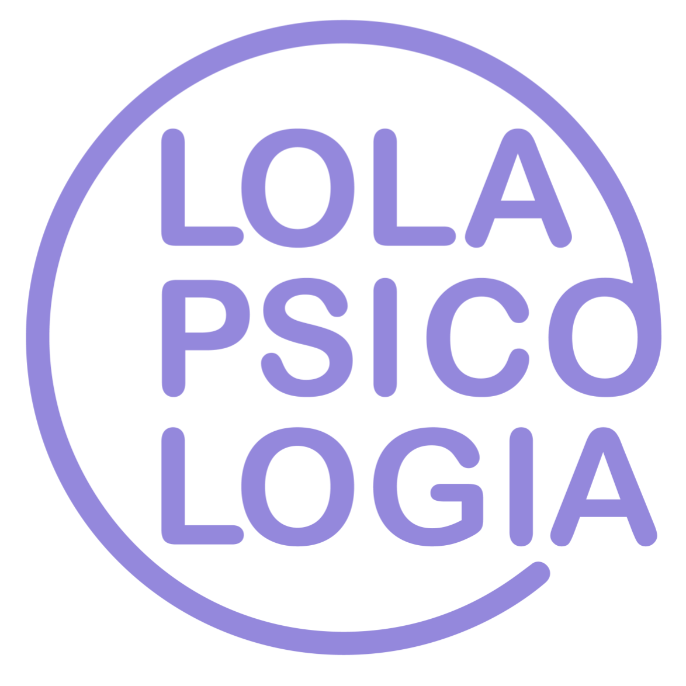
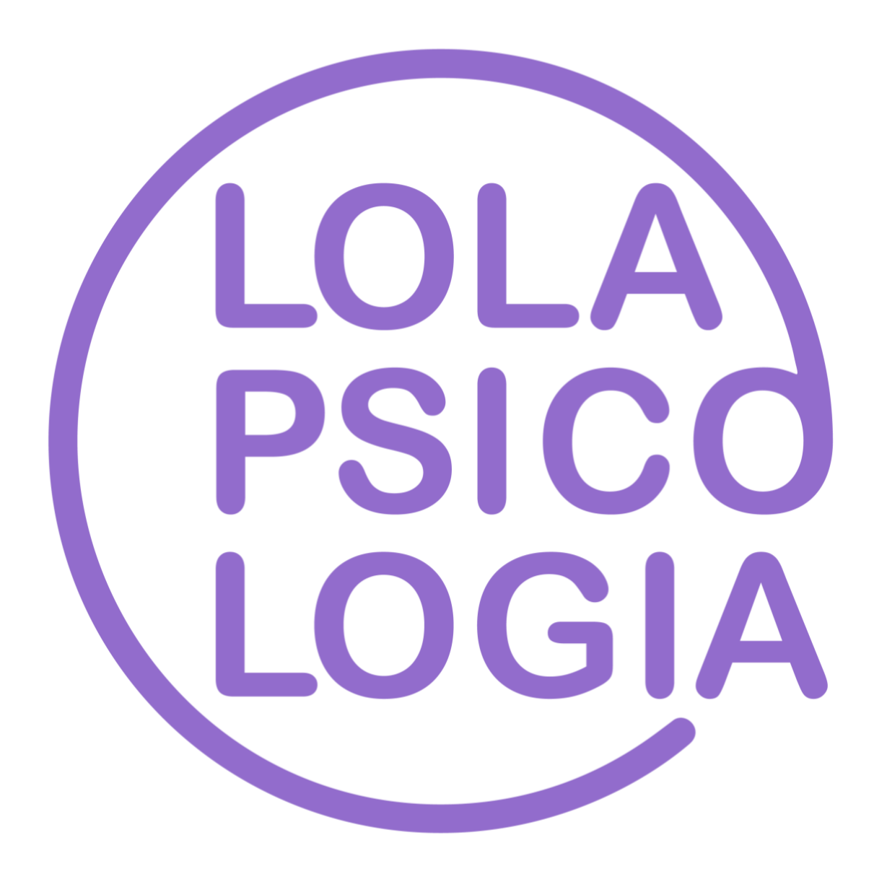

Llámame, escríbeme por WhatsApp o envía un email. La primera sesión orientativa es gratuita.
Puedes contactar conmigo para pedir tu sesión orientativa gratuita o resolver cualquier duda. Atiendo tanto presencial como online.
